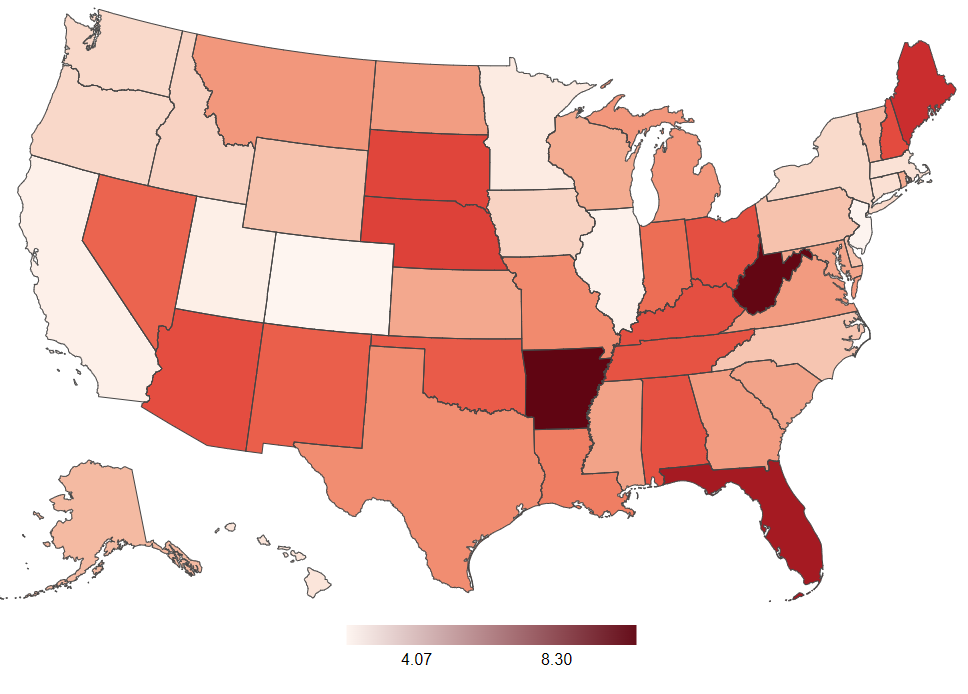
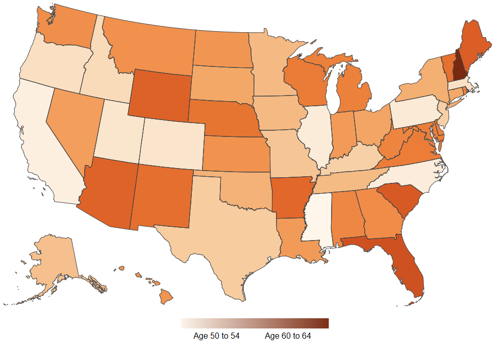
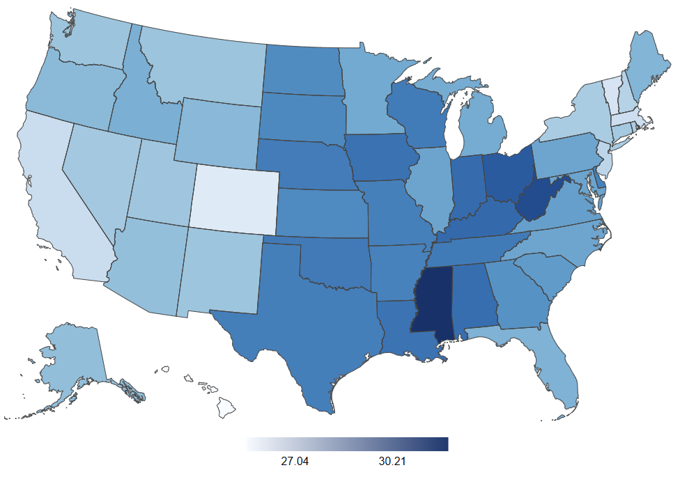
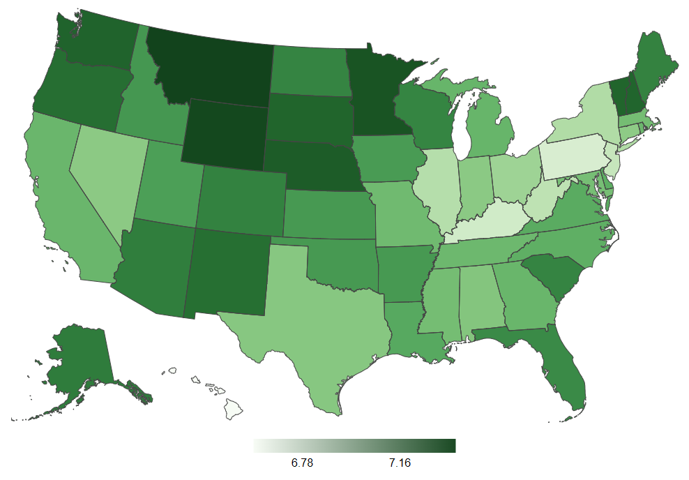

Design Process
The design process for this visualization began as primarily a code-first, design-second process. The initial project that I created consisted of multiple different chart styles, exploring somewhat disconnected parts of the data, only accessible one at a time. However, once I had become more familiar with the dataset and noticed how disjointed the project felt, I scrapped the entire code and started from scratch again. The first project did have a choropleth map that functioned well and was aesthetically pleasing, so, I decided to create the new visualization centered around a more interactive map that was able to display more data.
The main deviations from the initial project were a much greater deal of time spent on interactivity and cohesiveness rather than styling for the page itself. The original project had little to no interactivity other than a pop-up tooltip when hovering over chart elements. I also decided to leave the elements, other than the visualization itself, much simpler as to not take away from the visualization.
The dataset I chose for this project was extremely rich, with over 40 different attributes. I struggled when narrowing down which attributes to use in the visualization as it was tempting to include more attributes than I did and being unable to present a finished project by the deadline. A particular challenge I faced when using this dataset was the AgeCategory attribute. Rather than an exact age for each row, it was divided into discrete groups of ages. This made it difficult to simply calculate an average for each state. Ultimately, I assigned each age group a number, starting with 1 for the first group in the ordinal set and calculating an average based on the assigned numbers.
Design Rationale
As mentioned, the main goal for the final iteration of this project was a single view that allowed visualization of the dataset. The single map in the new visualization allows the user to not feel as though they are navigating completely different pages. Because each row of the dataset had the state listed, creating a geographically based visualization seemed logical. Despite the choropleth map allowing the user to easily toggle between different visualizations of different data, the coloring and legend do not easily convey exact values for each state, therefore, functionality was added which allowed the user to see the data upon clicking on a state.
As for color-encoding, an interpolation of reds was used for the visualizing the percentage of the state population in the dataset who had a heart attack. The color red is very commonly associated with the heart. As for the rest of the colors, my focus was to pick colors that contrasted with each other to clearly see the difference on the map when they were selected. Ordering for the different data selections was arbitrary except for the heart attack data which was listed first as it was the primary focus of the visualization. The page other than the visualization was left clean so as not to distract the user.
Findings and Evidence
The visualization helped to illustrate interesting relationships between different variables and the lack of a relationship where one might expect one.
Average age tended to be the biggest predictor of states which had a higher percentage of people who had a heart attack.
 As can been seen in the two images, states with the highest average ages, such as Florida, Arkansas, Arizona, and Maine, tended to have a higher rate of heart attacks.
We also see a slight overlap in average BMI and heart attacks, although this effect is mainly concentrated in the Midwest. The strongest correlation between BMI and heart attacks appears in West Virginia as seen in the image below.
Interestingly, I did not see any compelling connection between average sleep hours and heart attacks, although, the spread between the maximum average and minimum average was quite small at only about 20 minutes of sleep. It is fascinating to notice the geographically stratified differences in average sleep between the northern latitudes and the southern latitudes.
